Chronicles
of Nesis
Table of Contents
Prologue
[to be filled out]
The Characters

- Class
- Paladin
- Weapon
- Swords
- Race
- Elf
- Home
- Laria
[to be filled out]
The one you play as — a young Paladin of Laria, a holy warrior built on strength and faith. He wields Glenn's Longsword and the signature radiant attack, Smite. Balanced offense and defense (even STR/CON), with Wisdom/Intelligence as off-stats that unlock his powerful radiant path — the more you invest, the more Smite defines him.

- Class
- Warrior
- Weapon
- Axes
- Race
- Dwarf
- Home
- —
[to be filled out]
The party's frontline muscle — the heaviest physical hitter (top Strength, with the Constitution to soak blows). Where Elias balances, Falmri commits: raw melee damage and staying power. Built to stand at the front and hit hard.

- Class
- Mage
- Weapon
- Staffs
- Race
- Human
- Home
- —
[to be filled out]
The party's mage — devastating magical power (by far the highest Intelligence and Wisdom). Fragile up close, but her spells strike where physical defense can't help. The answer to armored and magic-vulnerable foes.
Difficulty
Right at New Game you choose a difficulty — Easy, Medium, or Hard. It sets how tough the world is and how much you'll grind, and the game spells out each option for you:
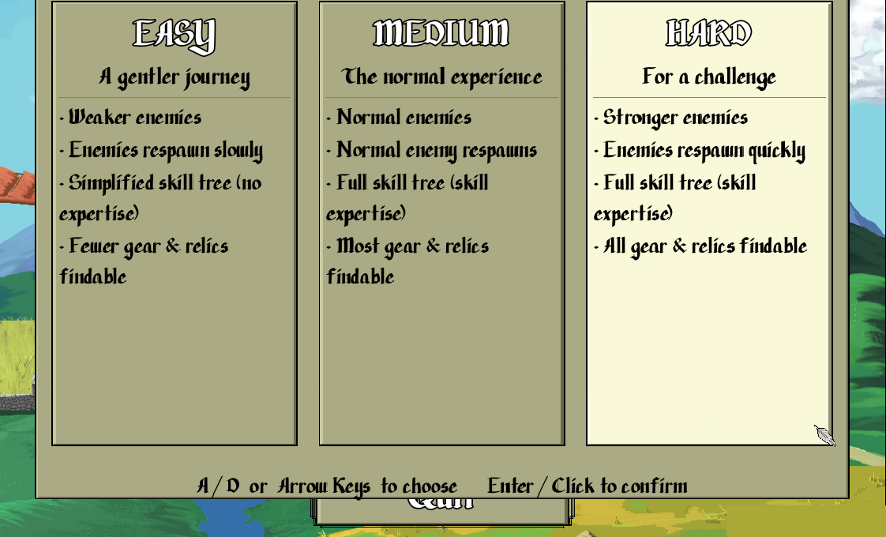
| Easy — a gentler journey | Medium — the normal experience | Hard — for a challenge | |
|---|---|---|---|
| Enemies | weaker | normal | stronger |
| Respawns | slow | normal | quick |
| Skill tree | simplified — no Expertise | full — Expertise on | full — Expertise on |
| Gear & relics | fewer findable | most findable | all findable |
| XP / grind | high XP — level fast, little grinding | moderate | low XP — grind & strategise more |
What it means for how you play:
- Easy leans into the story — high XP means little grinding, enemies are weaker, and skills stay simple (no Expertise). Breeze the combat and enjoy the tale.
- Medium is the intended balance — full combat depth with Expertise (skills grow the more you use them) and a moderate grind.
- Hard is the deep end — stronger enemies and low XP push you to grind and strategise more (leaning on items, positioning, and build), but everything is on the table: the full skill tree, Expertise, and all gear & relics to find. The harder you play, the more of the game's build depth you unlock.
Controls
The game plays three ways — full keyboard, keyboard + mouse, or mobile touch — and on desktop you can switch between keyboard and mouse any time just by using the other.
Full Keyboard
Play the whole game with two hands, controller-style: WASD moves (left hand), and O K L ; are the four action buttons (right hand) — they mirror WASD's layout like a controller's four face buttons.
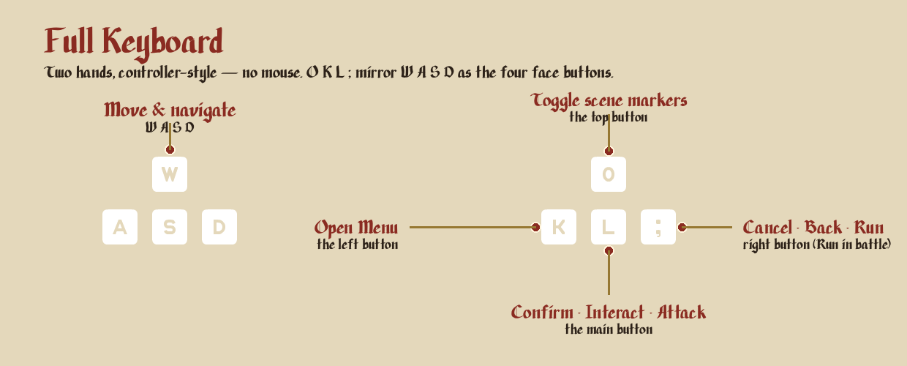
- L — Confirm / Interact / Attack (the main button).
- ; — Cancel / Back — and in battle this is also Run.
- K — Open the Menu.
- O — toggle the scene-exit markers.
Keyboard + Mouse
Prefer a mouse? WASD still moves, and the mouse handles the rest:
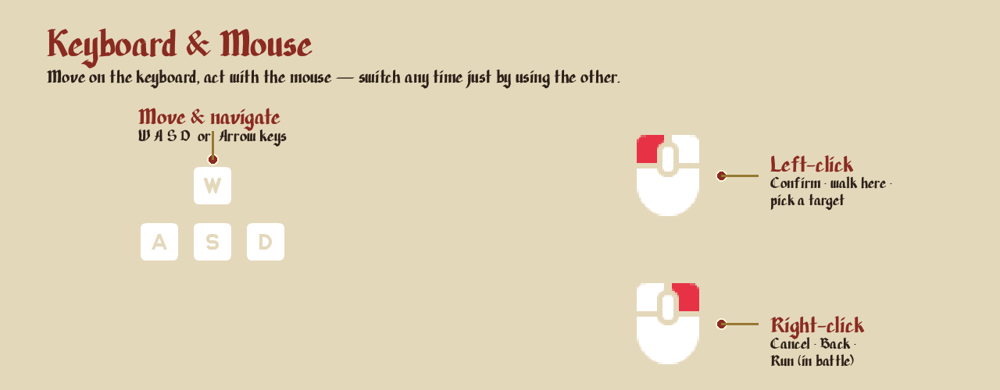
- Left-click — confirm / interact: walk to a spot, talk to an NPC, open a chest, pick a menu option, or pick an attack target.
- Right-click — Cancel / Back (also Run in battle).
- Two modes, auto-switching: moving the mouse switches to mouse mode (a feather cursor appears); pressing WASD switches back. Only mouse movement flips the mode — a click never does.
Mobile — touch controls
On a phone (landscape) the game draws an on-screen controller — a d-pad on the left and the four face buttons on the right:
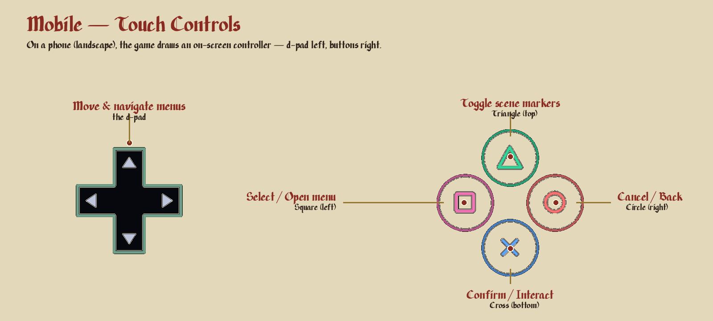
- D-pad — move and navigate menus.
- ✕ Cross (bottom) — Confirm / Interact.
- ○ Circle (right) — Cancel / Back.
- ☐ Square (left) — Select / Open the Menu.
- △ Triangle (top) — secondary (e.g. toggle the scene-exit markers).
(PlayStation convention: Cross = confirm, Circle = cancel.)
Exploring
Outside battle you walk the world, talk to people, and poke at everything.
- Move — WASD/arrows, or click a spot to walk there (see Controls).
- Talk — walk up to an NPC and interact to talk.
- Doors & exits — step onto a doorway or edge to move to the next area.
- Rest — resting fully restores HP and MP. You usually pay to rest at an inn; here in Laria you can rest free in the bed at Elias' house.
- Save — from the menu, you can save almost anywhere — including dungeons — except during certain scripted scene events.
Reading the field
The game shows you where you can go and what's worth grabbing:
Exploring — animated markers point to the ways out, and treasure shines until you take it.
- Scene-transition markers (on by default) — a floating animated triangle hovers over every way out of an area, so you always see where you can leave. Toggle them with the O / △ button (outside battle).
- Treasure shines. Chests, dropped item bags (loot from a won fight), and relics on the ground all catch the light until you take them; an opened chest stays visibly open, so you know what you've looted.
- Input-mode toast — switching between mouse and keyboard flashes a small icon top-right (~2s) showing which mode you're in.
Combat
Everything that happens once a fight begins — how a turn works, how to read the battle screen, and the damage & status systems underneath it.
Battle
Combat is turn-based on a tile grid. Units act in initiative order (higher Agility/Dexterity acts sooner).
Starting a fight — where you stand matters
You can see enemies on the field before any fight. Avoid one and you avoid the fight; walk into one and combat begins right there.
So how and where you engage is already strategy:
A dungeon before the fight — you see the enemy on the field; the tile grid is painted only when battle begins.
- The combat grid is painted the moment the fight starts, shaped by the scene around you — the ground you're standing on becomes the battlefield.
- Pick your footing before you make contact: an open area gives room to move and reposition; a tight space boxes everyone in.
- Where you make contact groups the enemies — engaging from a distance can keep a cluster bunched together (good for area skills), while charging into the middle can leave you surrounded.
- Today, turn order is purely stat-based — the fastest units (higher Agility/Dexterity) act first, no matter who started the fight. ◈ Planned: how you engage will earn an initiative edge — striking first for the first turn.
AP economy
Each turn you get AP (Action Points); move, attack, and skills each cost AP — plan the turn around it. AP grows slowly from Speed, and only with a lot of long-term investment (see Growth & Status) — don't expect it to climb fast.
How damage & hits work (the short version)
- Damage scales your attack against the target's defense (a ratio — high defense soaks a %, never to zero on a normal hit), plus a little random variance.
- Critical hits deal bonus damage. Yours is higher than most enemies' (~16% vs ~6%), so crits tend to swing fights your way — you'll see "CRIT" in the log.
- Hits are reliable in an even matchup (~95%); a miss (~5%) is the odd unlucky swing.
- Physical resistance (some foes, like the VSlime) halves physical damage. Radiant damage (Smite) ignores defense AND resistance — only magic defense reduces it. That's why Smite answers tanky enemies.
Range & areas
Most attacks are adjacent (range 1). Some skills and enemy attacks reach further — e.g. the Mother Slime's poison cloud is a radius-3 area, so you can be hurt without standing next to her.
Big units take up more than one tile
Some units — large enemies and bosses — occupy more than one grid cell at once (a 2×2 block, for example) instead of a single tile. A big unit is easier to reach (any of its cells counts as adjacent) and easier to catch in an area.
A multi-cell skill can hit the same unit more than once. An area attack resolves cell by cell, so if its zone covers several cells of one large unit, that unit is struck once for each of its cells the area touches. Line a wide skill up across two or three of a boss's tiles and every overlap lands — that's how you pour extra damage into a big target in a single cast.
Example — Elias's Sweep Attack on the Mother Slime. The Mother Slime fills a block of several tiles. Elias's Sweep Attack hits an area of cells at once, so if the sweep overlaps three of her tiles it deals three separate hits in one action — where a plain Attack would strike her only once. Positioning your area skills to catch the most of a big enemy is a real damage multiplier.
Status effects
- Poison — damage each turn; cure with Valerian Powder (or ride it out). Some enemies leave poison trails on tiles — avoid them.
Combat HUD
When a fight begins you drop onto a tile grid, and a heads-up display frames it. Here's how to read every part of it.
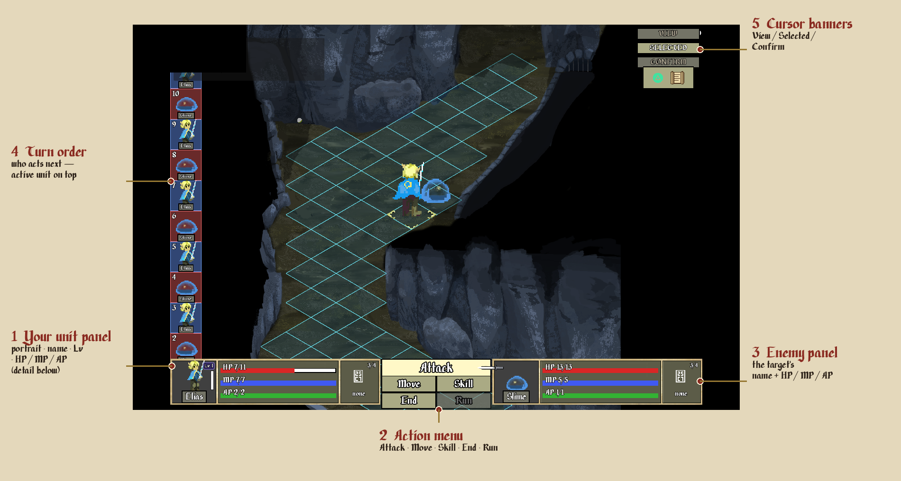
The five regions:
- Your unit panel (bottom-left) — the active character's portrait, name, and Level, plus the three bars HP / MP / AP. (Full breakdown below.)
- Action menu (bottom-centre) — your turn's choices: Attack · Move · Skill · End · Run.
- Enemy panel (bottom-right) — the targeted enemy's name + HP / MP / AP (detail shows only with the Scan relic; otherwise "???").
- Turn-order forecast (left rail) — who acts next, in initiative order, the active unit on top.
- Cursor state banners (top-right) — View / Selected / Confirm, telling you what a click will do.
The unit stat block, up close
Each combatant — your active character and the targeted enemy — shows the same little panel:
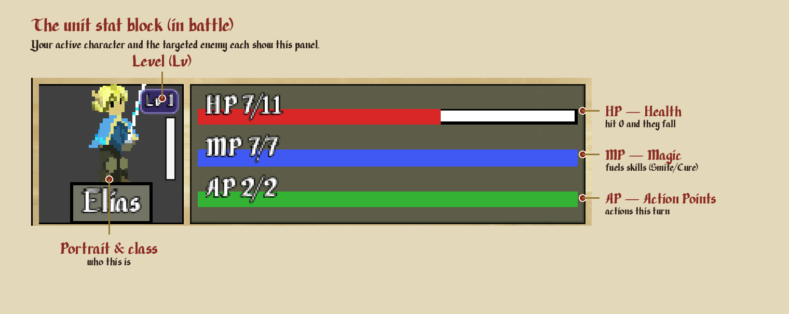
- HP (red) — health; hit 0 and the unit falls.
- MP (blue) — magic, spent on skills like Smite and Cure.
- AP (green) — Action Points for this turn — move, attack, and skills each cost AP.
Your turn — the action options
When it's your turn, the action menu (region ② above) offers:
- Move — step across tiles (costs AP).
- Attack — strike an adjacent enemy (most attacks are range 1).
- Skill — use a learned skill or a slotted relic (costs AP + often MP). See Skills.
- End — end your turn.
- Run — flee the battle (this is the Cancel / Back button).
- Items appear only with the Item relic slotted (see Skills).
Grid highlights
When you pick Attack or a skill, the grid lights up in three colours:
- Yellow — the range: every cell you could target with this skill.
- Red — the cells in range that actually hold a valid target.
- White — the impact area: the cell(s) that will be hit. An area-of-effect skill lights up more than one white cell.
(Move instead shows the tiles you can step to.)
Combat log
Toggle the combat log to see each attack's hit chance and result — HIT / MISS / CRIT and the damage — so you can see why a fight swung the way it did.
Damage Types & Status Effects
Every attack carries a damage type. The type decides what defends against it: Physical is blocked by physical defense; every element (poison, acid, ice, fire, radiant, necrotic) is blocked by magic defense — and Radiant ignores physical defense and resistance, which is why it cuts through armoured, tanky foes.
Many types also leave a status effect on the target and a hazard on the terrain. One row per type:
| Damage type | Status | Terrain | |
|---|---|---|---|
 | Physical | — | — |
 | Poison | Poisoned — damage every turn | Poison |
 | Acid | Acid Covered — ? | Acid |
| ◈ | Ice | Chilled — movement reduced | Icy (prone) |
| ◈ | Fire | Scorched — damage every turn | Burning |
 | Radiant | Blind — ? | Hallowed |
| ◈ | Necrotic | Cursed — ? | Cursed |
How it works: the Ice / Fire / Necrotic lines are ◈ full-game content. Standing on afflicted terrain applies that element each turn. A ? marks a specific that isn't locked in yet. Each status also escalates to a stronger Tier 2 version ◈ later in the game (applied by certain higher-level skills) — not shown here.
Cures: Cleanse removes any status; Valerian Powder cures Poison, Barbados Extract cures Acid.
💡 Poison is the one you'll actually meet in the demo. The VSlime and the Mother Slime's poison cloud apply Poisoned, and it keeps ticking after the moment that caused it. Carry Valerian Powder, or learn Cleanse (which strips any status at once). Don't linger on poison-trail tiles — they re-apply it.
How a unit takes a type — reactions & effects
On top of defense, a unit can have a built-in reaction to a damage type — and note that Heal and Absorb are effects, not damage types:
- Immune — takes 0 of that type (a Slime is immune to its own poison — you'll see the crossed-out immunity icon).
- Resistant — takes reduced damage (physical resistance halves physical, for instance).
- Absorb — the unit is healed by that type instead of harmed.
- Heal — the restorative effect itself (Cure, Mugwort) — it adds HP rather than dealing damage.
Why Radiant matters: an armoured or tanky foe shrugs off physical hits, but Radiant ignores physical defense and resistance entirely — it only answers to magic defense, which those foes barely have. That's the whole reason Smite is Elias's answer to a wall like the VSlime.
Skills
Skills are the special abilities you use in battle — beyond the plain Attack. They come in two kinds, and the difference is where they come from, not how they feel to use:
- Class skills — earned on your Paladin class tree (spend SP). They're part of you — permanent.
- Relic skills — granted by a relic you've slotted (a relic is an item you own). They travel with the relic — swappable.
The three kinds of skill — by relic colour
Whether it comes from your class tree or a slotted relic, every skill is one of three kinds — and a relic's colour tells you which at a glance:
| Kind | How it works | Examples | |
|---|---|---|---|
 | Action (red) | used on your turn — costs AP, often MP | Smite · Cure · Cleanse · Push Attack · Item |
 | Reaction (yellow) | triggers automatically in response to something | Counterattack · Parry · Berserckounter |
 | Passive (blue) | always on — no input needed | Scan · Health-up · Move-up |
So a red relic hands you a new action to spend AP on; a yellow one fires on its own when the moment comes; a blue one just quietly improves you. Class-tree skills fall into the same three kinds.
The two kinds at a glance
Class skills (from the Paladin tree)
Unlocked by spending SP on the class tree, walking node to node. Once learned, they're yours for good — and each is one of the three kinds above (Action, Reaction, or Passive).
Relic skills (from slotted relics)
A relic is an item you find and own. On its own it sits in your bag doing nothing — you slot it into a Relic Slot (in the Skills menu) to turn on the skill it grants.
Rumored… They say a relic carries an Anam — the imparted spirit of a past master — and to slot one is to receive their skill, which then grows the more you wield it in battle (the mastery you come to feel as Expertise). Whether that's truth or a villager's tale… the Prologue tells more of the Anam.
Demo relics:
- Item — lets you use consumables (Mugwort, etc.) in combat.
- Scan — reveals enemy stat blocks (without it, enemy stats read "???").
- Move — improves movement.
- Health — boosts survivability.
- Berserckounter — a counter-attack (dropped by the Mother Slime).
Same, and different
What they share:
- Both are used in battle the same way (an action on your turn, a passive, or a reaction).
- Both grow with use — every skill and every relic earns Expertise and gets stronger the more you lean on it (see below).
- Both spend the same resources (AP, and MP for the bigger ones).
What sets them apart:
| Class skill | Relic skill | |
|---|---|---|
| Where it comes from | the Paladin tree (spend SP) | a relic (an item you own + slot) |
| Permanence | permanent — part of your build | swappable — only active while the relic is slotted |
| Requires | SP + reaching the node | an unlocked Relic Slot to put it in |
| Its Expertise… | stays with you | travels with the relic (re-slot it and its mastery comes along) |
So: class skills are who you are; relic skills are what you're carrying. A relic is the bridge — an item that becomes a skill the moment it's slotted.
Unlocking class skills — the Paladin class tree
Spend SP (earned by leveling, ~3–5 per level) to buy nodes on the tree, moving from unlocked node to adjacent node. The tree mixes skills, ability-score nodes (raise a raw stat), and the Relic Slot node. You pick your path — lean toward the radiant line for Smite/Cure, or the physical line for Push Attack and raw STR.
Unlocking relic skills — the Relic Slot
A Relic Slot is itself a node on the class tree (spend SP to unlock it). Unlocking a slot gives you a place to put a relic; the tree can grant more than one slot. Then, in the Skills menu, drop a relic you own into the slot — now its skill is live.
💡 Pro Tip — an empty slot does nothing. The moment you unlock a Relic Slot, fill it. The Item relic is a great first choice — it lets you drink Mugwort mid-battle, which is a lifesaver.
Expertise — skills grow the more you use them (Medium & Hard only)
Every skill and every relic earns Expertise Points (EP) each time you use it in battle, and at EP milestones it upgrades — hitting harder and/or costing less. It rewards committing to a skill. A relic's expertise travels with the relic itself — move it and the mastery goes along.
Example — Smite climbs as you use it:
| Tier | Earned at | Effect |
|---|---|---|
| Baseline | (start) | radiant ×0.6, damage ×1.25, 3 MP |
| L2 | EP ≥ 40 | radiant ×0.8 |
| L3 | EP ≥ 100 | radiant ×1.0 |
| L4 | EP ≥ 200 | damage ×1.5 |
| L5 | EP ≥ 350 | MP cost → 1 (cheap to spam) |
⚠️ Expertise is only active on Medium and Hard. On Easy it's off — skills stay at baseline no matter how much you use them (Easy keeps things simpler and story-focused; Medium/Hard add the depth of mastering skills through use).
Your first skills
Early on your SP is scarce, so spend it with intent:
- A stat node or two to open the tree in your chosen direction (STR line for melee, WIS line for radiant).
- Push Attack — the cheapest action skill and a strong opener (shove an enemy back).
- The Relic Slot — unlocking it early is worth it: slot the Item relic and you can heal with Mugwort inside combat, which turns tight fights winnable.
Then the signature payoffs come deeper in: Cure (heal without items) and Smite (radiant damage that bypasses physical defense/resistance — the answer to tanky foes like the VSlime).
Growth & Status
Abbreviations at a glance
| HP — Health Points (survive) | MP — Magic Points (fuel skills) | AP — Action Points (actions/turn) |
| XP — Experience (fills → level up) | JP — Job Points (spend → raw stats) | SP — Skill Points (spend → skill tree) |
| EP — Expertise Points (grow a skill/relic through use) |
(“CP” is the old name for JP — you may see it in older material; it’s Job Points now.)
You grow in two independent ways — raising raw stats (your build) and unlocking the skill tree.
XP → Levels
Win fights for XP; fill the bar to level up. Each level grants JP and SP to spend.
Raw stats vs Battle stats
- Raw stats are the knobs you turn with JP — Strength, Constitution, Dexterity, Agility, Intelligence, Wisdom (plus Luck).
- Battle stats are calculated from your raw stats (and gear) — you never edit them directly. Each battle stat has one primary raw stat that moves it most, with others chipping in. To raise the battle stat you want, invest in the raw stat that feeds it.
Battle stats — the full list
| Battle stat | Grows most from | Also from | What it does in combat |
|---|---|---|---|
| HP — Health | Constitution | Strength | Damage you can take before you fall. |
| MP — Magic | Intelligence | Wisdom, Constitution | Fuel for skill casts (Smite, Cure). |
| AP — Actions | Speed — an accumulator (builds from Agility + Dexterity) | — | Actions per turn; move, attack and skills each cost AP. Rises only with heavy long-term investment. |
| Initiative | Agility | Dexterity, Wisdom | Turn order — higher goes sooner. |
| Move Range | Agility | Dexterity | How many cells you can move in a turn. |
| Physical Attack | Strength | Dexterity, Wisdom | Your weapon / physical damage dealt. |
| Physical Accuracy | Dexterity | Strength, Wisdom | Chance your physical attacks land. |
| Physical Dodge | Dexterity | Agility, Wisdom, Strength | Chance to evade an enemy's physical attack. |
| Physical Defense | Dexterity & Constitution | Strength | Reduces the physical damage you take. |
| Magic Attack | Intelligence | Wisdom, Dexterity | Your Smite / spell damage dealt. |
| Magic Accuracy | Intelligence | Wisdom | Chance your skills land. |
| Magic Dodge | Intelligence | Wisdom | Chance to resist an enemy's magic. |
| Magic Defense | Intelligence | Wisdom | Reduces magic damage you take — and it's the only thing that softens radiant (Smite). |
| XP Bonus | Wisdom | Intelligence (+ Scan Relic) | Extra XP earned from each battle. |
Elias is a Paladin — lean STR/CON, with WIS/INT as off-stats that unlock the radiant (Smite) path.
Accumulator stats — they grow from your history
A few stats — Stamina, Speed, Knowledge — have no − / + buttons in the Status menu: you can't buy them directly. They're accumulators that rise automatically at each level-up, based on how much you've invested in related raw stats across all of your previous levels.
Each one builds from a pair of raw stats you've invested in:
| Accumulator | Builds from |
|---|---|
| Stamina | Constitution + Strength |
| Speed | Agility + Dexterity |
| Knowledge | Intelligence + Wisdom |
Because they read your running total, points you commit early keep feeding the accumulator at every level after. Investing early compounds into a bigger boost: the sooner you commit to a stat, the larger its accumulator (and the battle stats it powers) grows over a whole run.
These payoffs are slow by design — plan for the long game. Your AP (actions per turn) is the clearest example: it can climb from Speed, but only with a lot of sustained investment — it won't jump from a level or two. If you want more AP over a run, commit to that path early and consistently, and be patient. Accumulators reward planning your build ahead instead of hoarding points.
The currencies
| Spend on | Where | |
|---|---|---|
| JP — Job Points | raw stats (your permanent build) | Status menu |
| SP — Skill Points | the Paladin class tree (skills + Relic Slot) | Skill Tree menu |
| AP — Action Points | actions per turn in battle (grows slowly from Speed) | (automatic in combat) |
| MP — Magic Points | skill casts (Smite/Cure) — restore with Irid Liquor | (in combat) |
💡 Spend your JP and SP after every level-up. Leveling grants them, but the power only lands once you actually spend it (JP in Status, SP in the Skill Tree). An unspent pile is wasted power.
Items & Equipment
Consumables — each does ONE thing
- Mugwort — heals HP (the only HP-restore in the demo). Using it in battle needs the Item relic.
- Irid Liquor — restores MP (for skills).
- Valerian Powder — cures poison.
Equipment
- Weapon — your attack (Elias claims Glenn's Longsword early).
- Armor / accessories — defense and effects. Buying gear isn't wearing it — open Equipment and equip it (see the Pro Tip). Armor is optional but makes fights easier.
💡 Equip what you buy/find. A bought Leather Chestpiece does nothing sitting in your bag — open Equipment and put it on.
Relics — items that grant skills
A relic is also an item you own — but its whole job is the skill it grants when slotted. See Skills for how relics work (and the rumored Anam behind them). In your bag, a relic is just an item until you slot it.
Menus
Open the menu with Space / K / Tab (or the on-screen menu button). Each does one job:
| Menu | What it's for |
|---|---|
| Status | spend JP to raise raw stats; view your character |
| Equipment | equip weapon / armor / accessories |
| Skills | slot relics into an unlocked Relic Slot |
| Skill Tree (Paladin tree) | spend SP to unlock skills + nodes (incl. the Relic Slot) |
| Items | use / view consumables |
| Save / Load | save your game (free in the village) |
Status — buying stats with JP
The Status menu is where you spend JP (Job Points) to raise your raw stats — your permanent build.
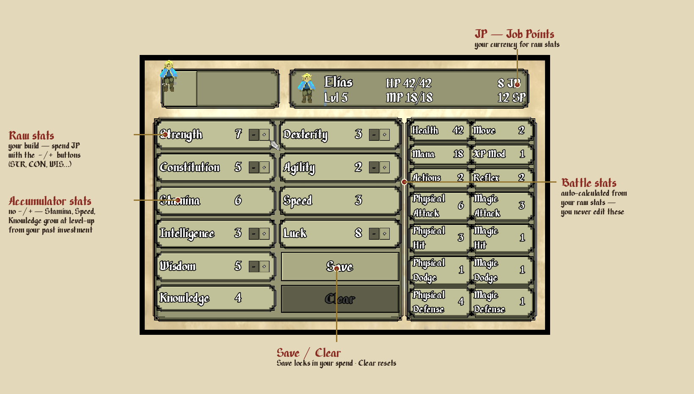
Press + / − on a stat to buy it (each costs JP), then Save to lock it in (Clear resets). The battle stats on the right are calculated from your raw stats — you never edit those directly. The stats without −/+ (Stamina, Speed, Knowledge) are accumulators — they grow on their own at level-up from your past investment (see Growth & Status).
Skill Tree — learning skills with SP
The Skill Tree (the Paladin class tree) is where you spend SP (Skill Points) to unlock skills.
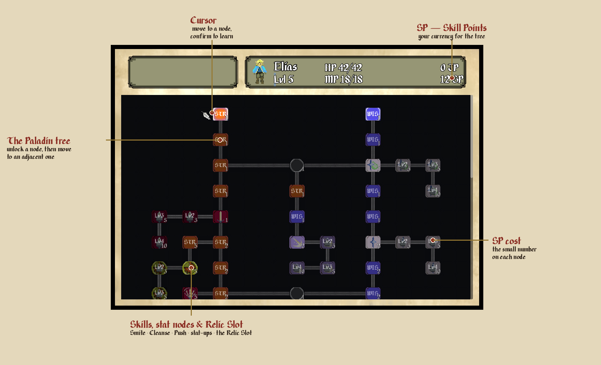
Move the cursor to a node and confirm to learn it (the small number is its SP cost); you can only reach a node that's adjacent to one you've already unlocked. The tree mixes skills (Smite, Cleanse, Push Attack…), stat-up nodes, and the Relic Slot.
Skills — using skills & slotting relics
The Skills menu lists the skills you've learned and holds your Relic Slots.
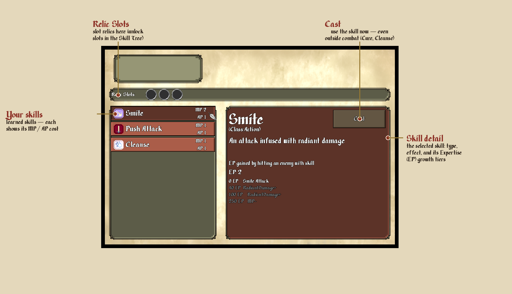
Pick a skill on the left (each shows its MP / AP cost) to see its detail panel — type, effect, and its Expertise (EP) growth tiers. The Cast button uses the skill right there — many work outside combat too (e.g. Cure to heal or Cleanse to clear a status between fights). Drop a relic you own into a Relic Slot (unlock slots in the Skill Tree) to turn its skill on.
Equipment — gearing up
The Equipment menu equips a Weapon, Armor, Boots, or Accessory you own into its slot.
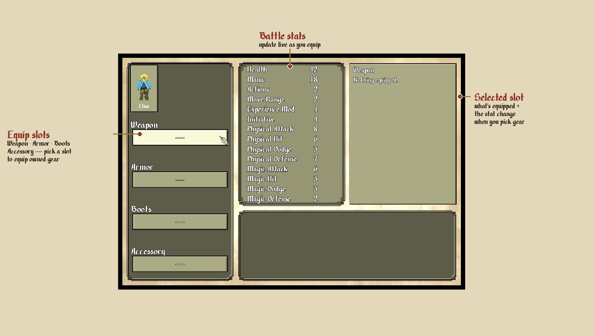
Pick a slot and choose a piece of gear from your bag; the battle stats update live so you can see exactly what a swap does before you commit.
Items — using consumables
The Items menu lists the consumables you carry (and your relics).
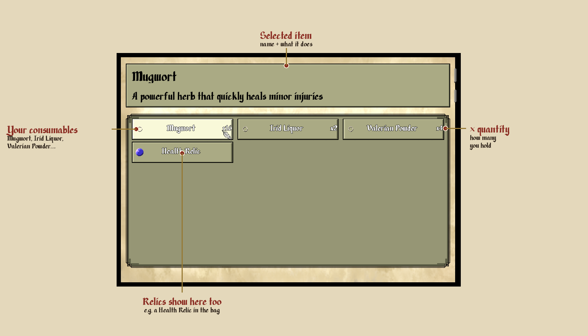
Each item shows a × quantity; selecting one shows its name and effect. Mugwort heals HP, Irid Liquor restores MP, Valerian Powder cures poison. (Using an item in battle needs the Item relic slotted — see Skills.)
Bestiary
A field guide to what you'll meet in the demo — what it is, what it does, and how to put it down.
The bread-and-butter Waterway foe. No resistances, no tricks — straightforward to fight: physical attacks land fine, and Glenn's Longsword drops one in about two hits. Poison-immune (don't bother), and it hits for a modest 3–5.
How to fight: just attack. The danger is numbers, not any single Slime — a room of two or three can chip a low-level party down, so heal between fights.
The real trash threat, and a lesson in the combat system. Three things make it nasty:
- It halves your physical damage (physical resist ½) — your sword takes roughly twice as long to kill it.
- Every hit poisons you — cure it with Valerian Powder, or ride out the damage-over-time.
- Don't try to poison it back — it absorbs poison and heals from it.
How to fight: radiant damage (Smite) ignores its physical resistance — that's the clean answer once you have it. Until then, grind it down physically and keep your poison cured. It's the enemy that teaches "bring the right tool."
Hints & Tips
- Spend your JP and SP after every level. Leveling grants them; the power only lands once you spend it (JP in Status, SP in the Skill Tree). Don't sit on a pile.
- Fill every Relic Slot the moment you unlock one. An empty slot does nothing — the Item relic (drink Mugwort mid-battle) is a great first choice.
- Equip what you buy or find. Gear in your bag does nothing until you put it on in Equipment.
- Heal between fights. Mugwort is your only HP-restore — top up before the next room, and rest at a bed when you can.
- Rush the wrong enemy and you'll bleed. The VSlime halves physical damage and poisons you — bring Valerian Powder, and Smite it if you can (radiant ignores its resistance).
- Crits are on your side. Your crit chance beats most enemies' — even fights swing your way with a little luck.
- Save often — free in the village.
- Use your favorite skills. On Medium/Hard, skills grow with use (Expertise) — leaning on one makes it far stronger over a run.